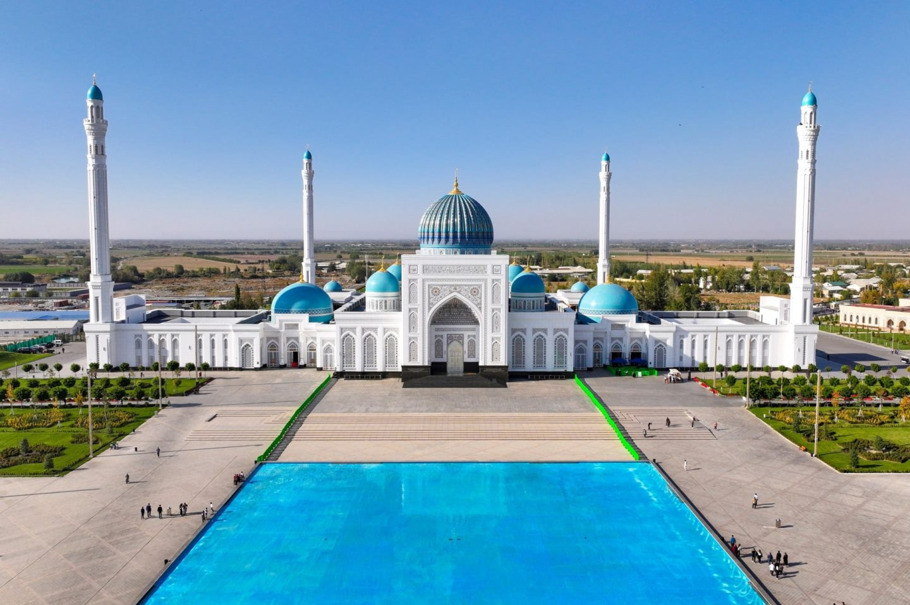
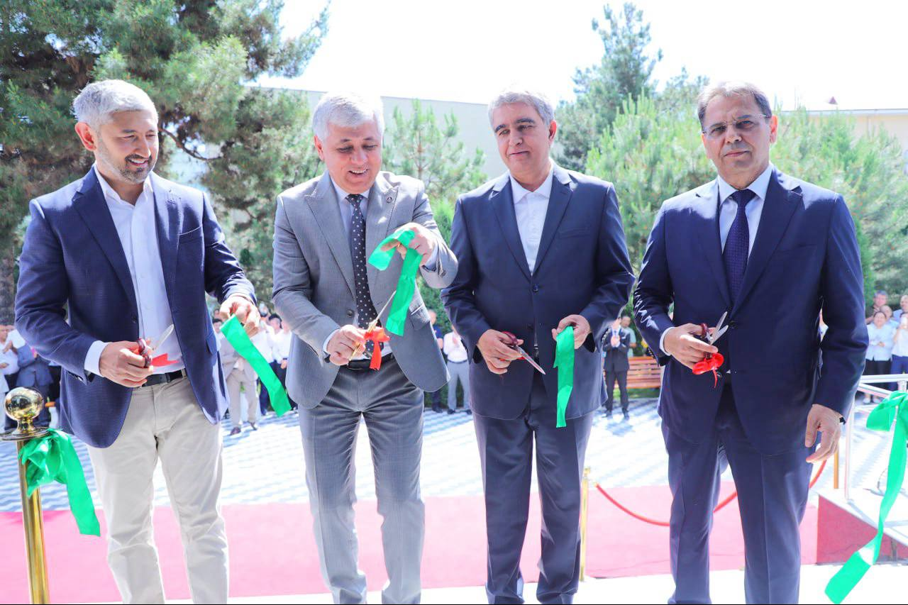
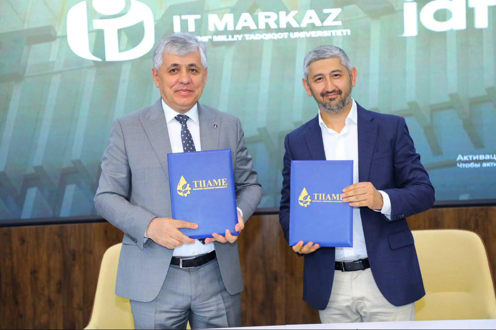

«TIQXMMI» MTU qo?idagi maktabning fizika olimpiadasidagi natijalari
Ixtisosla?tirilgan maktab ?quv?ilari va ustozlari xalqaro fizika olimpiadalaridagi natijalari u?un taqdirlandi.
Rasmiy manba
?zbekiston va «TIQXMMI» MTU
Ta’lim va ilm-fandan transport va madaniyatga?a. ?zbekiston yangiliklari, Prezident ta?abbuslari va «TIQXMMI» MTU tadqiqotlari.
«TIQXMMI» MTU hayoti, ilmiy hamkorlik va mamlakatimizdagi yirik loyihalar.
Ixtisosla?tirilgan maktab ?quv?ilari va ustozlari xalqaro fizika olimpiadalaridagi natijalari u?un taqdirlandi.
Rasmiy manbaVazirlik yanvar–oktabrda 10,69 mlrd m³ suv tejalganini ma’lum qildi.
Rasmiy manbaPrezident raisligidagi yi?ili?da qurili? sur’ati, yagona me’moriy konsepsiya va kuzgi k??at eki? i?lari muhokama qilindi.
Rasmiy manba
Universitetlar q??ma ta’lim dasturlari, tadqiqotlar va akademik alma?inuv b?yi?a keli?uvlarga eri?di.
Rasmiy manbaBahodir Mirzayev xalqaro imtihonlarni ta?kil eti?dagi natijalar u?un maxsus mukofot oldi.
Rasmiy manbaPrezident ?avkat Mirziyoyev i?tirokida taqdim etilgan takliflarda «TIQXMMI» MTU faoliyatini Orolni qutqari? xalqaro jam?armasi ta?abbuslarini amalga o?iri?ga xizmat qiluv?i ilmiy-tahliliy platforma sifatida rivojlantiri?, ta’lim va tadqiqotlarga sun’iy intellektni joriy eti?, Markaziy Osiyo va Af?oniston u?un suv x?jaligi b?yi?a q??ma ta’lim dasturlarini y?lga q?yi? vazifalari belgilangan.
Rasmiy manbaPrezident bilan u?ra?uvda sohada 413 ta yangi i?lab ?iqari? quvvati i?ga tu?irilgani ma’lum qilindi.
Rasmiy manba
Prezident Samarqandda yangidan bunyod etilgan majmuada ziyorat?ilar u?un yaratilgan ?aroitlar bilan tani?dilar.
Rasmiy manba
I?ga tu?irilgan obyektlar orasida 2 ming ?rinli maktab, “Sohil bo?i” va energetika in?ootlari bor.
Rasmiy manbaPrezident Tadao Ando loyihasi asosida bunyod etilayotgan muzey binosining qurili? jarayoni bilan tani?dilar. Qurili? i?lari davom etmoqda.
Rasmiy manbaPrezident 14 tumandagi tajriba, energiya y?qoti?larini qisqartiri? va be? yillik dastur yuzasidan ma’lumot berildi.
Rasmiy manbaSamarqand–Urgut va Urgan? aeroporti–Xiva tarmoqlari qurildi. Navoiy–Buxoroda ikkin?i elektrla?tirilgan liniya i?ga tu?di.
Rasmiy manba?zbekistondagi Islom sivilizatsiyasi markazida 40 dan ortiq mamlakat vakillari ilk xalqaro forumda qatna?di.
Rasmiy manbaMos yozuv topilmadi.
To?kent irrigatsiya va qi?loq x?jaligini mexanizatsiyala? muhandislari instituti Milliy tadqiqot universiteti (qisqa nomi ’ «TIQXMMI» MTU) irrigatsiya, melioratsiya, gidrotexnika va qi?loq x?jaligini mexanizatsiyala? y?nali?larida mutaxassislar tayyorlaydi. ?zAning 2026-yil 10-martdagi xabariga k?ra, universitetda 11 mingdan ziyod talaba tahsil oladi, 7 ta fakultet, 37 ta kafedra va 38 ta ta’lim y?nali?i faoliyat yuritadi.
?zAning 2026-yil 10-martdagi xabariga k?ra, universitetda 11 mingdan ortiq talaba tahsil oladi, 7 ta fakultet, 37 ta kafedra va 38 ta ta’lim y?nali?i faoliyat yuritadi. O‘zA

Prezident PQ-42-son qarori bilan institutga Milliy tadqiqot universiteti maqomi berildi. Qarorda Fundamental va amaliy tadqiqotlar institutini ta?kil eti? ma’qullanib, ?quv laboratoriyalarini modernizatsiya qili? dasturi tasdiqlandi.
O‘zAPrezident ta?abbusi bilan «TIQXMMI» MTUda Suv?ilar maktabi o?ildi. Maktab fermerlar va suv x?jaligi mutaxassislariga suvni tejov?i texnologiyalarni amalda q?lla?ni ?rgatadi.
O‘zA?zbekiston Respublikasi Prezidenti ?avkat Mirziyoyev va Qozo?iston Respublikasi Prezidenti Qosim-Jomart Toqayev «TIQXMMI» MTUning Olmaota ?ahridagi filialini tantanali ravi?da o?dilar. Filial talab yuqori b?lgan texnik y?nali?lar b?yi?a mutaxassislar tayyorlaydi.
O‘zAMarkaziy Osiyo davlatlari rahbarlarining u?ra?uvida Prezident ?avkat Mirziyoyev suv x?jaligi mutaxassislarini tayyorla? maqsadida «TIQXMMI» MTU huzurida mintaqaviy kompetensiyalar markazini ta?kil eti? ta?abbusini ilgari surdilar.
O‘zAPrezident ?avkat Mirziyoyev muhandislik ta’limiga oid takliflar taqdimoti bilan tani?dilar. Dual ta’lim doirasida haftasiga t?rt kun nazariy ta’lim va ikki kun haq t?lanadigan amaliyot ?ta? taklif qilindi. Suv diplomatiyasi magistratura dasturini kengaytiri? va davlat granti ?rinlarini k?paytiri? taklifi ma’qullandi.
O‘zAPrezident PQ-122-son qarorida «TIQXMMI» MTUda dual ta’limni joriy eti?, «Raqamli universitet» platformasini yarati? va 2026–2028-yillarda ?quv laboratoriyalarini modernizatsiya qili? belgilangan.
Lex.uzT?rt qavatli axborot texnologiyalari markazi 2025-yil 10-mayda foydalani?ga top?irildi. Markazda dasturla? va ?quv xonalari, talabalar bilan i?la? ofisi hamda suv resurslarini bo?qari?ni raqamla?tiri? u?un dasturiy ta’minot i?lab ?iquv?i b?lim faoliyat yuritadi. Rasmiy manba
?zA xabariga k?ra, 2025-yil 15-dekabrdagi taqdimotda Prezident ?avkat Mirziyoyev 200 ?rinli axborot texnologiyalari markazi, raqamli kutubxona va talabalar bilan i?la? ofisi haqida axborot berildi. Prezident «TIQXMMI» MTUni dunyoning eng nufuzli 300 universiteti qatoriga kiriti? b?yi?a aniq ?ora-tadbirlar i?lab ?iqi?ni top?irdilar. O‘zA





Prezident
?zbekiston Respublikasi Prezidenti ?avkat Miromonovi? Mirziyoyev 1957-yil 24-iyulda Jizzax viloyatining Zomin tumanida tavallud topganlar. 1981-yilda To?kent irrigatsiya va qi?loq x?jaligini mexanizatsiyala? muhandislari institutini muhandis-mexanik mutaxassisligi b?yi?a tamomlaganlar. Mehnat faoliyatini ?u institutda ki?ik ilmiy xodim sifatida bo?lab, katta ?qituv?i, dotsent va ?quv i?lari b?yi?a prorektor lavozimlarida faoliyat yuritganlar. 2003-yilda ?zbekiston Respublikasi Bo? vaziri etib tasdiqlanganlar. 2016-yil 14-dekabrda Prezident lavozimini egallaganlar. 2023-yil 14-iyulda qasamyod qabul qilib, navbatdagi muddatga lavozimga kiri?ganlar.
?avkat Miromonovi? Mirziyoyev 1957-yil 24-iyulda Jizzax viloyatining Zomin tumanida tavallud topganlar. Texnika fanlari nomzodi, dotsent. 2003-yilda ?zbekiston Respublikasi Bo? vaziri etib tasdiqlanganlar.
Prezident ta?abbusi bilan bunyod etilgan yoki modernizatsiya qilingan, ?uningdek, i?tirokida foydalani?ga top?irilgan ayrim obyektlar.
Yangi To?kent
2026-yil 12-oktabrda Prezident i?tirokida yettita obyekt foydalani?ga top?irildi. Ular orasida maktab, «Sohil bo?i», elektr nimstansiyasi va trigeneratsiya stansiyasi bor.
Fotoreportaj va manbaSamarqand viloyati
Prezident ta?abbusi bilan majmua qayta bunyod etildi. Majmuada 10 ming ki?iga m?ljallangan masjid, maqbara va zamonaviy muzey barpo etildi.
Fotoreportaj va manba
Surxondaryo · Termiz
2021-yilda Prezidentga taqdim etilgan loyiha doirasida 246 kilometr magistral va i?ki tarmoq qurildi. 2026-yil fevraldagi hisobotga k?ra, i?imlik suvi Termiz ?ahri va ?nta tumanga yetkazilmoqda.
Fotoreportaj va manba
Namangan · ?ortoq
Davlat-xususiy ?eriklik asosida energiya tejamkor nasoslar ?rnatildi. Stansiya 815 gektar yerni su?oradi. Prezident 2025-yilda u?bu tajribani kengaytiri? b?yi?a top?iriq berdilar.
Fotoreportaj va manba
Surxondaryo · Sariosiyo
2019-yilda Prezident top?iri?idan s?ng t??on 20 metrga k?tarilib, ikkita agregat ?rnatildi. Modernizatsiya 2023-yilda yakunlandi, stansiya quvvati 175 megavattga yetdi.
Fotoreportaj va manbaFarmonlar, qarorlar va strategiyalar. E’lon qilingan natijalar tegi?li hisobot sanasi bilan berilgan.
13 310 ta obyektga “Aqlli suv” qurilmalari ?rnatildi, 106 ta yirik obyekt avtomatla?tirildi.
Rasmiy manbaPF–140 farmoni 2026–2027-yillarda ta’minot, xizmat sifati va energiya samaradorligini yax?ila?ni belgiladi.
Rasmiy manbaRasmiy ma’lumotga k?ra, qamrov 2017-yildagi 63 foizdan 2026-yil iyulida qariyb 83 foizga yetdi.
Rasmiy manbaPF–99 farmoni suv x?jaligidagi ayrim loyihalarga tadbirkorlar va loyiha ta?kilotlarini jalb qili? ?oralarini belgiladi.
Rasmiy manbaPrezident raisligidagi may oyidagi yi?ili?da 2 ming kilometr magistral kanal betonlangani va 721 kilometr kanal qurilgani ma’lum qilindi.
Rasmiy manbaPQ–122 qarori kafedralarni hududlardagi suv x?jaligi masalalarini ?rgani? va tavsiyalar tayyorla?ga jalb qildi.
Rasmiy manbaPF–21 farmoni suv teja?, irrigatsiya samaradorligi va atrof-muhitni muhofaza qili? k?rsatki?larini belgiladi.
Rasmiy manba2026-yil fevralida qamrov 2,6 mln gektar deb e’lon qilindi. 2028-yil u?un maqsad 3,5 mln gektar.
Rasmiy manbaPQ–250 dasturi kanallar va suv in?ootlarini yangila?, bo?qaruvni raqamla?tiri? va suv tejov?i texnologiyalarni kengaytiri?ni k?zda tutadi.
Rasmiy manba?RQ–1076 bilan tasdiqlangan kodeks suvni bo?qari?, undan foydalani? va suv obyektlarini muhofaza qili? qoidalarini belgilaydi.
Rasmiy manbaPF–158 suv teja?ni ustuvor y?nali? deb belgiladi. Farmon 2026-yilda PF–21 ku?ga kirga? ?z ku?ini y?qotdi.
Rasmiy manbaPQ–42 institutga yangi maqom berib, muhandislar tayyorla? va texnologiyalar transferini rivojlantiri?ni belgiladi.
Rasmiy manbaPQ–5005 obyektlarni raqamla?tiri?, nasos stansiyalarini kuzati? va resurs tejov?i su?ori?ni joriy qili?ni rejala?tirgan edi.
Rasmiy manbaPF–6024 suv xavfsizligi, resurslarni bo?qari? va su?oriladigan yerlarni yax?ila? y?nali?larini belgiladi.
Rasmiy manbaMos yozuv topilmadi.